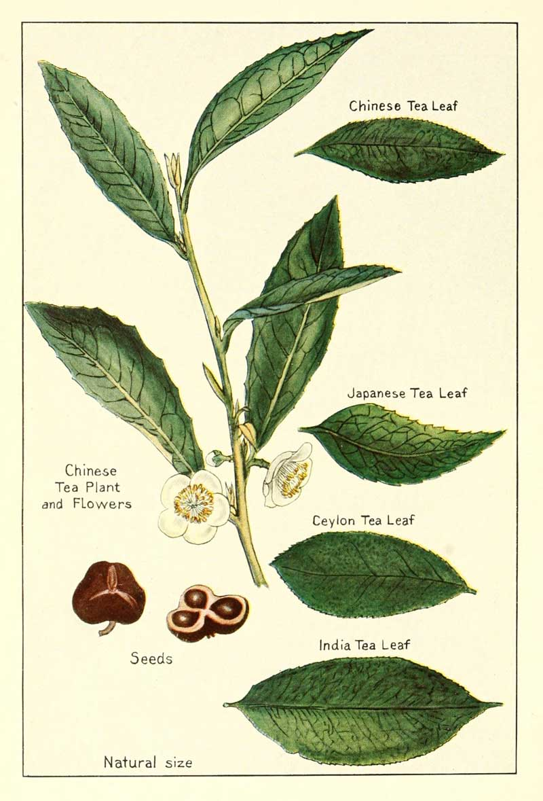

Camellia sinensis is an evergreen plant that grows mainly in tropical and subtropical climates. Some varieties can also tolerate marine climates and are cultivated as far north as Cornwall in England, Perthshire in Scotland, Washington state in the United States, and Vancouver Island in Canada. In the Southern Hemisphere, tea is grown as far south as Hobart on the Australian island of Tasmania and Waikato in New Zealand.
Tea plants are propagated from seed and cuttings; about 4 to 12 years are needed for a plant to bear seed and about three years before a new plant is ready for harvesting. In addition to a zone 8 climate or warmer, tea plants require at least 127 cm (50 in) of rainfall a year and prefer acidic soils. Many high-quality tea plants are cultivated at elevations of up to 1,500 m (4,900 ft) above sea level. Though at these heights the plants grow more slowly, they acquire a better flavour.
Two principal varieties are used: Camellia sinensis var. sinensis, which is used for most Chinese, Formosan and Japanese teas, and C. sinensis var. assamica, used in Pu-erh and most Indian teas (but not Darjeeling). Within these botanical varieties, many strains and modern clonal varieties are known. Leaf size is the chief criterion for the classification of tea plants, with three primary classifications being Assam type, characterised by the largest leaves; China type, characterised by the smallest leaves; and Cambodian type, characterised by leaves of intermediate size. The Cambod type tea (C. assamica subsp. lasiocaly) was originally considered a type of assam tea. However, later genetic work showed that it is a hybrid between Chinese small leaf tea and assam type tea. Darjeeling tea also appears to be hybrids between Chinese small leaf tea and assam type tea.
A tea plant will grow into a tree of up to 16 m (52 ft) if left undisturbed, but cultivated plants are generally pruned to waist height for ease of plucking. Also, the short plants bear more new shoots which provide new and tender leaves and increase the quality of the tea.
Only the top 1–2 inches (2.5–5.1 cm) of the mature plant are picked. These buds and leaves are called 'flushes'. A plant will grow a new flush every seven to 15 days during the growing season. Leaves that are slow in development tend to produce better-flavoured teas. Several teas are available from specified flushes; for example, Darjeeling tea is available as first flush (at a premium price), second flush, monsoon and autumn. Assam second flush or "tippy" tea is considered superior to first flush, due to the gold tips that appear on the leaves.
Pests of tea include mosquito bugs of the genus Helopeltis (which are true bugs that must not be confused with the dipteran) that can tatter leaves, so they may be sprayed with insecticides. In addition, there may be Lepidopteran leaf feeders and various tea diseases.